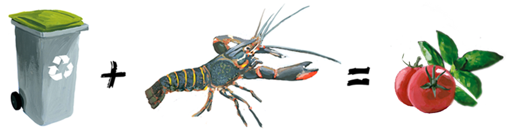
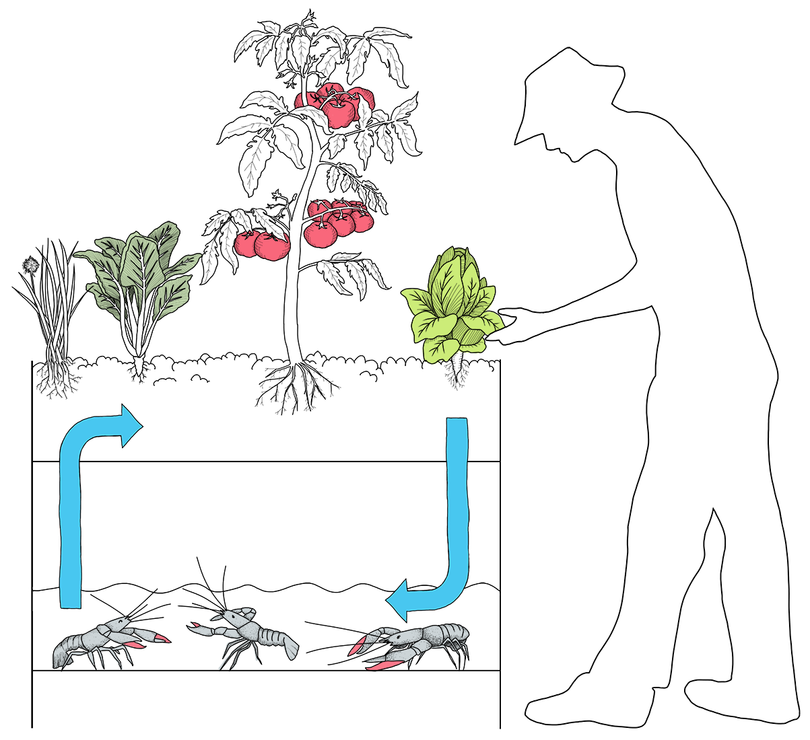

Pour la revalorisation des écosystèmes dans un monde sobre en carbone
Ecoponie

Le projet Ecoponie met en oeuvre une symbiose de fonctionnement entre une production aquacole (des crustacés) et une production végétale.

"Cette pratique agricole innovante, basée sur le principe de bouclage écosystémique, permet une production double et simultanée sur des surfaces artificialisées".
"Ce projet de recherche et développement vise à expérimenter cette solution et préciser les conditions de mise œuvre techniques et économiques requises pour intégrer cette innovation au panel des pratiques agricoles de la transition écologique et solidaire."